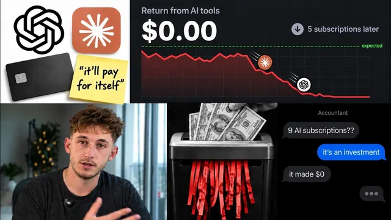

AI 도입 100번 해보고 알게 된 것 전부

원본 영상 보기 →
- 실패의 시작은 기술이 아니라 '정하지 않은 숫자'
- 도구 10개보다 공유된 기억 하나
- 데모와 운영 사이에는 인증·예외·담당자가 있다
한 줄 요약
AI 파일럿 프로젝트의 95%가 측정 가능한 성과를 못 낸다는 MIT 연구와 100여 개 기업 도입 경험을 겹쳐 보면, 성공한 5%는 도구가 아니라 "어떤 숫자를 바꿀지 정하는 회의"에서 출발했어요. Nick Puru가 그 5%가 지키는 네 가지 순서를 정리해 줍니다.
전체 내용 정리
파일럿의 95%가 성과를 못 내는 이유는 뭘까요?
Nick의 팀은 지난 3년간 법률 사무소, 병원, 에이전시, 홈 서비스 기업 등 약 100개 기업의 AI 도입과 컨설팅을 진행해 왔어요. 그런데 현장에서 본 패턴이 MIT가 300개가 넘는 기업의 AI 프로젝트를 연구한 결과와 그대로 겹쳤다고 해요. 파일럿 프로젝트의 95%가 측정 가능한 성과를 전혀 내지 못했다는 거죠.
갈림길은 의외로 단순해요. 95%는 시중 도구를 사서 쓰기만 했고 나머지 5%는 비즈니스를 기억하고 팀이 이미 일하는 환경 안에서 돌아가는 시스템을 하나 직접 만들었어요. 그리고 그 5%가 제일 먼저 한 일은 AI 도구를 여는 게 아니라 회의였습니다.
직원들은 이미 AI를 쓰는데, 왜 회사에는 아무것도 안 쌓일까요?
보고서에 따르면 약 95% 기업의 직원들이 이미 개인 AI 도구를 쓰고 있지만 회사 차원에서 비용을 내는 곳은 40%에 그쳐요. 다들 각자 계정으로 AI를 쓰니까 그 결과가 업무 자산으로 쌓이지 않는 거죠.
ChatGPT를 쓰고 Zapier(노코드 자동화 툴) 자동화를 몇 개 돌리고 누군가는 챗봇도 만들어 뒀을 수 있어요. 그래도 툴 사이에서 데이터를 옮기고 업데이트를 쫓아다니는 건 결국 대표 본인입니다. 도구가 10개여도 병목은 여전히 사람이라는 게 Nick의 진단이에요.
MIT가 꼽은 세 가지 원인, 그리고 Nick이 덧붙인 네 번째
MIT는 실패 원인을 세 가지로 정리했어요.
첫째, 시스템이 학습하지 않아요. 매일 비즈니스를 처음부터 다시 설명해야 하죠. 매일 아침 기억을 잃는 천재 직원을 고용한 것과 같다는 비유가 나와요. Nick은 이 메모리 문제가 지금 가장 크다고 봅니다. 팀원마다 자기 프롬프트로 자기만의 ChatGPT를 쓰다 보니, 회사의 지식이 10개의 서로 다른 계정에 흩어져 하나로 합쳐지지 않는 거예요.
둘째, 워크플로우가 취약해요. 데모에서는 되는데 실제 고객을 상대하면 바로 오류가 나죠. Nick의 팀이 회계 법인을 위해 받은 편지함을 읽고 QuickBooks(회계 소프트웨어) 기반으로 답장 초안을 쓰는 시스템을 만들었을 때가 그랬어요. QuickBooks가 매번 이중 인증 로그인을 강제하고 끌 수도 없어서 작업의 큰 부분이 자동화 시스템이 로그인할 수 있게 인증 코드를 넘겨주는 일이었다고 해요. 작은 데모에서는 이런 과정이 전혀 안 보이거든요. 데모와 매일 실제로 돌아가는 시스템의 차이가 바로 여기에 있습니다.
셋째, 도구가 업무와 맞지 않아요. 일은 이미 받은 편지함, CRM, 전화 시스템 안에서 일어나는데 AI가 거기 없으면 사람들은 그냥 예전 방식대로 일해요. 그래서 AI는 아무도 안 여는 별도 탭 구석에 방치되곤 하죠.
그런데 Nick은 개인적인 견해라며 네 번째 요인을 덧붙여요. 연구는 "측정 가능한 수익이 없다"고 했지만 그의 경험으로는 대부분의 프로젝트가 애초에 수익을 내는지 확인조차 하지 않았어요. 어떤 수치를 개선할지 아무도 정하지 않았으니 측정할 게 없었던 거죠. 시간이나 비용에서 확실한 이득이 없다면 기술이 아무리 뛰어나도 소용없어요.
5%가 지킨 첫 번째 원칙: 만들기 전에 수익부터 검증하세요
Nick은 MIT가 관찰한 5%와, 법률 사무소·클리닉·대행사·회계 법인 같은 서비스 기업에서 효과를 본 사례를 합쳐 네 가지 요소로 정리해요. 그리고 첫 번째가 나머지 셋보다 훨씬 중요하다고 강조합니다.
그게 앞서 말한 그 회의예요. 대표와 실제 결정권자가 앉아서 주당 근로 시간, 응답 시간, 1인당 수익처럼 바꿀 숫자 하나를 정하고 그게 실제 돈으로 얼마인지 계산하는 자리죠. 어떤 이익을 가져다줄지 설명할 수 없다면 애초에 만들지 말라는 거예요. 거기서 누가 무엇을 쓸지, 데이터가 어디로 흘러가도 되는지 규칙까지 합의해야 하고요.
예시가 하나 나와요. 연 매출 300만 달러 규모의 암호화폐 마케팅 대행사를 감사했는데, CEO는 Discord(내부 소통 플랫폼)에서 오가는 업무 연락을 70% 줄이고 싶어 했어요. 그런데 Discord에서 나갈지 말지를 내부에서 결정하지 못해 구축은 여전히 멈춰 있다고 해요.
결정을 내릴 사람이 그 회의에 있어야 합니다. 아무도 행동으로 옮기지 않을 숫자로는 수익을 만들 수 없으니까요.
두 번째·세 번째 원칙: 돈과 직결된 워크플로우 하나, 그리고 하나의 기억
두 번째는 돈이나 시간과 연결된 워크플로우 하나로 시작하는 거예요. Nick은 이번 주에 팀에게 "지난 7일 동안 ChatGPT나 Claude를 어디에 썼나요?"라고 물어보라고 해요. 돌아오는 답이 곧 사람들이 이미 도움을 원하는 업무 목록이죠. 그중 매일 일어나고 돈이나 시간과 바로 이어지는 걸 하나 고르면 수익을 가장 쉽게 확인할 수 있어요.
예전에 함께한 토지 투자자는 딱 한 가지, 인바운드 판매자 리드에 다시 전화를 걸어 자격을 확인하고 캘린더를 잡는 일부터 시작했어요. 전화하고 판매자를 검증하고 약속을 잡는 과정이라 측정하기가 아주 쉬웠죠. 지금은 일주일에 약 70건의 통화를 처리하고 있다고 해요.
세 번째는 하나의 기억을 주고 일이 이미 일어나는 곳에 배치하는 것이에요. 코스타리카의 한 서핑 캠프가 음성 에이전트를 원해서 찾아왔는데, 이들은 WhatsApp, 웹 채팅, 이메일로도 문의를 받고 있었어요. 채널마다 다른 답을 내놓으면 네 곳 모두에서 똑같은 기억 상실 문제가 생길 뿐이죠. 그래서 네 채널이 모두 읽는 지식 베이스 하나를 만들었고 가격이 바뀌면 한 번만 고치면 되게 했어요.
Nick의 회사도 같은 방식으로 잠재 고객 문의에 응답하는 시스템을 쓰고 있어요. Instagram 대화창 안에서 바로 답하니까 사람들이 실제로 쓴다는 거죠. 완벽하진 않지만 어떻게 답할지 모를 땐 사람에게 알림을 보내요. Nick은 솔직히 그게 제대로 작동하는 방식이라고 말합니다.
네 번째 원칙: 언젠가 고장 나니까 담당자를 두세요
마지막은 항상 담당자를 따로 두는 거예요. 언젠가는 문제가 생길 수밖에 없으니 쉽게 고칠 수 있게 만들어 두자는 거죠. AI 에이전트가 고객 앞에서 실수하면 절약한 비용보다 손실이 더 큰 경우가 많아서 실수를 빨리 잡아 고쳐야 해요.
앞의 회계 법인에서는 시스템이 답장을 쓰고 담당자가 전부 승인해요. 예전에 함께한 한 병원에서는 에이전트가 예약을 중복으로 잡은 적이 있었는데, 확인해 보니 가용성 확인 절차를 건너뛰게 설정돼 있었다고 해요. 그래서 모든 예약 단계에 실시간 검증을 넣고 직원이 언제든 채팅을 가로챌 수 있는 킬 스위치를 만들었어요.
90일 안에 세 개의 워크플로우, 숫자로 확인하기
Nick의 팀은 이 전체 과정을 'AI 네이티브화'라고 불러요. 경영진이 추구할 성과와 규칙, 업무 시간의 흐름을 파악하고 현재 상태를 정확히 측정하는 데서 출발하죠. 그래야 기준점이 생기니까요. 무엇을 만들든 개선할 수치를 명확히 제시할 수 있을 때만 실행 목록에 올라가요.
그다음 단일 정보 소스, 개인별 작업 공간, 비즈니스에 꼭 필요한 맞춤 기능, 스스로 돌아가는 에이전트 순으로 쌓아 올려요. 이걸 모두 합친 게 이들이 말하는 'AI 운영 체제'예요. 90일 동안 서로 다른 워크플로우 약 세 개를 구현하고 각각 미리 합의한 수치로 성과를 재요.
90일은 임의로 정한 숫자가 아니에요. 보고서에 따르면 중견 기업은 파일럿에서 실제 운영까지 약 90일이 걸렸고 대기업은 9개월 이상 걸렸거든요. 작은 회사일수록 오히려 유리하다는 얘기죠.
이 순서를 지키는 이유는 95%가 이 기본을 놓치기 때문이에요. 대부분의 공급 업체가 팔려는 도구부터 내밀다 보니 무엇이 성공인지 아무도 합의하지 않아요. 그러면 6개월 뒤 성과가 있었는지를 두고 모두 의견이 갈리죠. 반대로 리더십이 먼저 수치를 승인하면 그 뒤의 결정은 훨씬 쉬워져요.
수치가 안 움직인다면, 돈과 시간을 다 쏟은 1년 뒤가 아니라 몇 주 안에 알아내야 합니다.
핵심 인사이트
- 실패의 시작은 기술이 아니라 '정하지 않은 숫자': Nick은 대부분의 AI 프로젝트가 성과를 못 낸 게 아니라 성과를 잴 기준을 처음부터 안 정했다고 봐요. 바꿀 숫자와 그 금전 가치를 먼저 정하면, 몇 주 안에 계속할지 접을지 판단할 수 있죠.
- 도구 10개보다 공유된 기억 하나: 직원 각자의 AI 계정에 흩어진 지식은 회사 자산이 되지 않아요. 여러 채널이 같은 지식 베이스를 읽게 하면 가격 하나 바뀔 때 한 번만 고치면 되고 답변도 일관돼요.
- 데모와 운영 사이에는 인증·예외·담당자가 있다: QuickBooks 이중 인증이나 병원 예약 중복처럼 실제 운영에서만 드러나는 문제가 많아요. 사람 승인 단계와 킬 스위치를 처음부터 설계에 넣어야 고객 앞 실수를 줄일 수 있습니다.
오늘 당장 해볼 것
- 팀원(혼자라면 본인)에게 "지난 7일 동안 ChatGPT나 Claude를 어디에 썼나요?"라고 물어 목록을 만들어 보세요. 이미 AI 도움을 원하는 업무가 그대로 드러나요.
- 그 목록에서 매일 반복되고 돈이나 시간과 바로 이어지는 업무 하나를 골라, 지금 주당 몇 시간이 드는지 적어 두세요. 이게 나중에 성과를 비교할 기준점이 됩니다.
- 고객 문의를 여러 채널(이메일, Instagram DM, 카카오톡 채널 등)로 받는다면 가격·운영 시간·자주 묻는 질문을 문서 하나에 모아 보세요. 나중에 어떤 AI 응답 시스템을 붙이든 이 문서 하나만 고치면 됩니다.